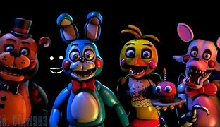
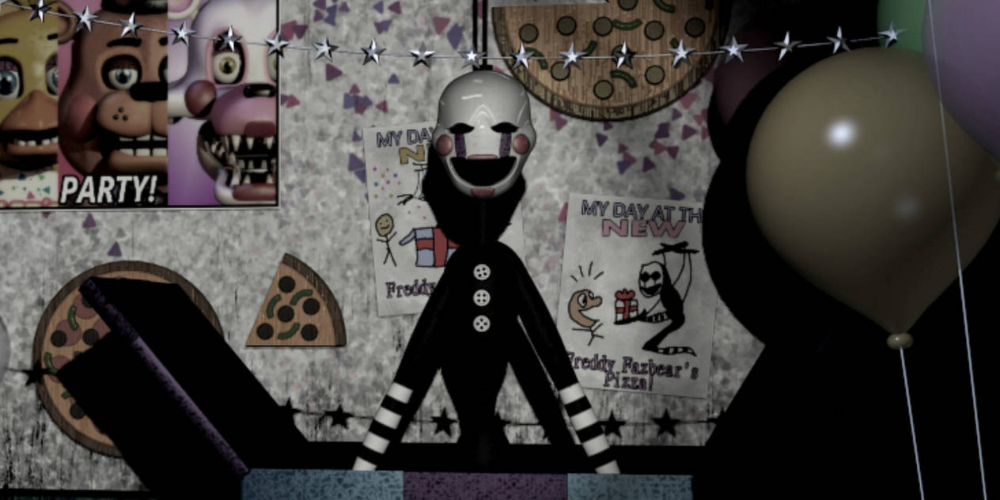

Toy Animatronics

In "Five Nights at Freddy's 2," the game introduces a set of animatronics known as the "Toy Animatronics." These characters are more advanced and supposedly safer versions of the original animatronics from the first game. Here's a description of each of the Toy Animatronics:
Toy Freddy: Toy Freddy is the updated version of the original Freddy Fazbear. He's noticeably smaller in size and sports a sleeker, more kid-friendly appearance with a top hat and bowtie. Toy Freddy is one of the main antagonists in the game, becoming increasingly active as the nights progress.
Toy Bonnie: Toy Bonnie is the revamped version of Bonnie, the original animatronic rabbit. He has a brighter blue color, large red cheeks, and a more modern design. Toy Bonnie is known for his frequent visits to the player's office.
Toy Chica: Toy Chica takes on a more cutesy, feminine look compared to her original counterpart. She has a yellow body, rosy cheeks, and a bib that says "Let's Party!" She also features a removable beak, which is often missing when she appears in the office.
Mangle: Mangle, also known as "Funtime Foxy," is an entirely new animatronic introduced in FNAF 2. Mangle is a disheveled, broken-looking fox animatronic with exposed endoskeleton parts. She is known for her erratic movements and is often found hanging from the ceiling in the Kid's Cove before becoming active.
Balloon Boy (BB): Balloon Boy is a smaller animatronic and serves a different role in the game. He has a round head, holds a red balloon, and is usually seen carrying a sign that reads "Balloons!" BB is not as threatening as the other animatronics and can disable the flashlight and ventilation system.
These Toy Animatronics are designed to be more appealing and kid-friendly, but as the nights progress, they become increasingly aggressive and dangerous to the player. Managing them is a key part of the gameplay in "Five Nights at Freddy's 2."
Withered Animatronics

In "Five Nights at Freddy's 2," you also encounter a set of animatronics known as the "Withered Animatronics." These characters are the older, more deteriorated versions of the original animatronics from the first game. Here's a description of each of the Withered Animatronics:
Withered Freddy: Withered Freddy is the decayed and damaged version of the original Freddy Fazbear. He is missing his face, exposing his endoskeleton, and has several tears and cracks throughout his body. Withered Freddy is one of the antagonists and is known for his persistent and aggressive behavior.
Withered Bonnie: Withered Bonnie is the deteriorated form of the original Bonnie the Bunny animatronic. He is missing his face, left arm, and ear, revealing his endoskeleton. Withered Bonnie has a menacing and tattered appearance and frequently visits the player's office.
Withered Chica: Withered Chica is the run-down version of the original Chica the Chicken animatronic. She is missing her hands, has a broken jaw, and her bib reads "Let's Eat!!!" Her overall appearance is unsettling, and she becomes increasingly active as the nights progress.
Withered Foxy: Withered Foxy is the damaged incarnation of the original Foxy the Pirate Fox. His body is heavily deteriorated, and he has a large tear down his chest, exposing his endoskeleton. Withered Foxy is known for his sudden and aggressive rushes toward the player's office.
Golden Freddy (Withered): Golden Freddy, who appears in FNAF 2 as a hallucination, is also seen in his withered form. He is a ghostly, yellow, and tattered version of Freddy Fazbear. Golden Freddy tends to appear randomly and can be a significant threat if not handled correctly.
These Withered Animatronics are in a state of disrepair, which adds to their creepy and unsettling appearance. Unlike the Toy Animatronics, they are not present on the pizzeria floor but rather play a role in the backstory and hallucinations in "Five Nights at Freddy's 2."
The Puppet (Marionette)

The Puppet, also known as the Marionette, is a pivotal character in the lore of the Five Nights at Freddy's series and appears prominently in "Five Nights at Freddy's 2." Here's a description of the Puppet:
Appearance: The Puppet has a ghostly and eerie appearance. It is a humanoid animatronic with a white, mask-like face adorned with painted tear streaks, giving it a sorrowful expression. Its face features black, hollow eyes and a red bowtie. The Puppet has a tall and slender body, with long arms and legs. It is typically seen wearing a black suit with a white collar and cuffs.
Behavior: In "Five Nights at Freddy's 2," the Puppet is housed in a music box located in the Prize Corner of the restaurant. The player must wind up the music box periodically to prevent the Puppet from escaping. If the music box goes unwound for too long or if the player neglects it, the Puppet will begin to activate and eventually emerge from the box. Once free, it becomes a major threat to the player.
Attack: The Puppet's attack is particularly dangerous. When it escapes, it doesn't roam the facility like other animatronics but instead approaches the player's office quickly and silently. Once in the office, it can attack with little warning, leading to a jump scare and a game over.
Lore Significance: The Puppet is crucial to the game's lore as it is believed to be the spirit of a murdered child possessing the animatronic. Its origin is tied to the tragic events at the pizzeria and the mystery of the missing children's souls. The Puppet's actions are closely connected to the overarching narrative of Five Nights at Freddy's.
The Puppet's haunting and eerie presence, combined with its role in the game's lore, makes it one of the most memorable and unsettling characters in the series.